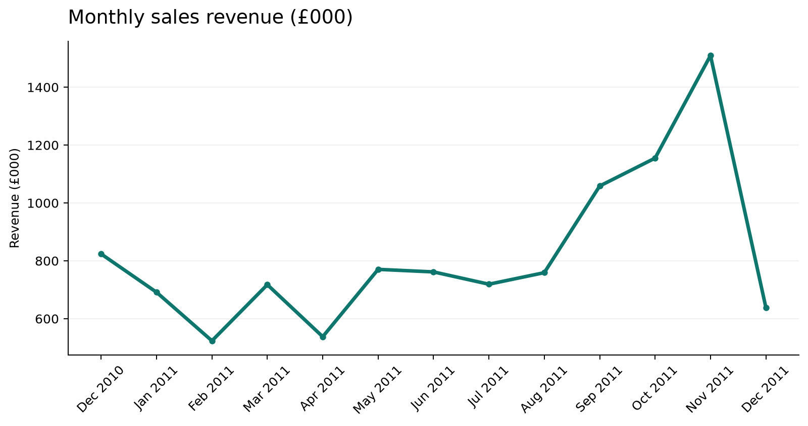
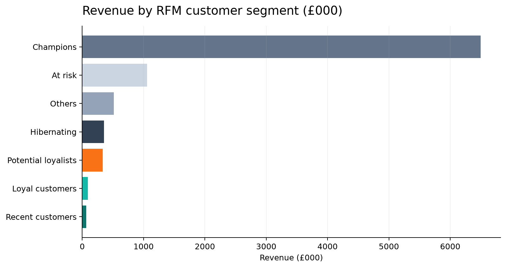

FEATURED PROJECT · RETAIL ANALYTICS01 / 05
Retail Sales &
Customer Performance
From 541,909 transaction rows to a reproducible sales and customer performance dashboard.
£10.67Mrecorded line revenue
65.6%identified customers repeat
38countries in the source


PythonSQL / DuckDBPower BIExcel
Read project brief UCI Online Retail, 2010–2011. Sales are positive quantity × unit price on non-cancelled lines, including qualifying service lines. RFM groups are descriptive, not causal.